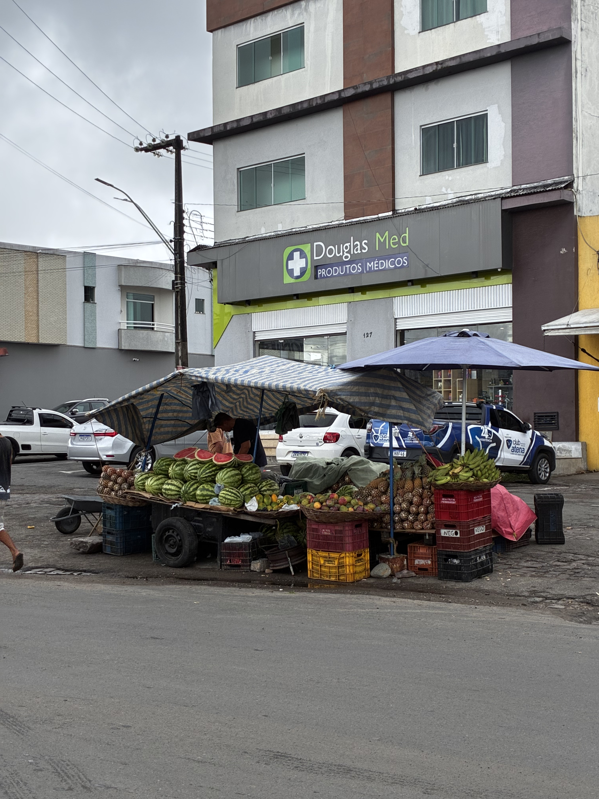

A região de Lagarto é uma potência agrícola. Nas bancas, você encontra desde a macaxeira descascada na hora até carnes frescas e uma variedade imensa de frutas e verduras trazidas diretamente dos povoados.
1. Frutas da Estação

Banca de FrutasFoto: Equipe Veja Lagarto (2026)

Variedade de CoresFoto: Equipe Veja Lagarto (2026)

Frutas FrescasFoto: Equipe Veja Lagarto (2026)

Sabores da TerraFoto: Equipe Veja Lagarto (2026)

Comércio de FrutasFoto: Equipe Veja Lagarto (2026)

Detalhe das FrutasFoto: Equipe Veja Lagarto (2026)

Banca ColoridaFoto: Equipe Veja Lagarto (2026)

Frutas RegionaisFoto: Equipe Veja Lagarto (2026)

Frutas SelecionadasFoto: Equipe Veja Lagarto (2026)

Venda de FrutasFoto: Equipe Veja Lagarto (2026)

Exposição de FrutasFoto: Equipe Veja Lagarto (2026)

Grande VariedadeFoto: Equipe Veja Lagarto (2026)
2. Raízes, Verduras e Legumes

Raízes da TerraFoto: Equipe Veja Lagarto (2026)

Mandioca e InhameFoto: Equipe Veja Lagarto (2026)

Macaxeira FrescaFoto: Equipe Veja Lagarto (2026)

Mix de VegetaisFoto: Equipe Veja Lagarto (2026)

Raízes e TubérculosFoto: Equipe Veja Lagarto (2026)

Legumes FrescosFoto: Equipe Veja Lagarto (2026)

HortaliçasFoto: Equipe Veja Lagarto (2026)

Cheiro Verde e FolhasFoto: Equipe Veja Lagarto (2026)
3. Carnes e Proteínas

Açougue TradicionalFoto: Equipe Veja Lagarto (2026)

Corte de CarnesFoto: Equipe Veja Lagarto (2026)

Carnes FrescasFoto: Equipe Veja Lagarto (2026)

Banca de CarnesFoto: Equipe Veja Lagarto (2026)

Variedade de CortesFoto: Equipe Veja Lagarto (2026)
4. Grãos, Farinhas e Ambiente

Feijão de CordaFoto: Equipe Veja Lagarto (2026)

Cereais a GranelFoto: Equipe Veja Lagarto (2026)

Sacos de GrãosFoto: Equipe Veja Lagarto (2026)

Goma de TapiocaFoto: Equipe Veja Lagarto (2026)

Barraca TípicaFoto: Equipe Veja Lagarto (2026)

Corredor de AlimentosFoto: Equipe Veja Lagarto (2026)

Movimento nas BancasFoto: Equipe Veja Lagarto (2026)

Visão da FeiraFoto: Equipe Veja Lagarto (2026)